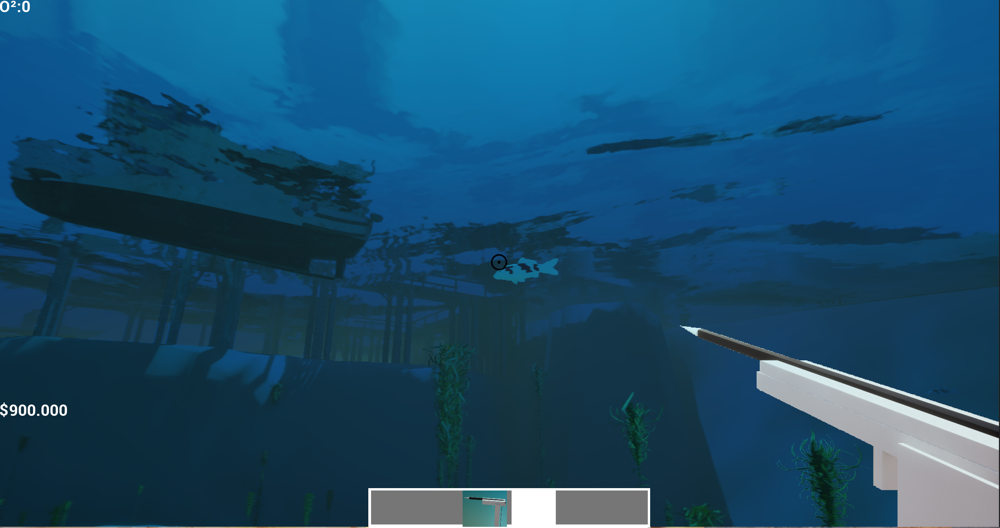
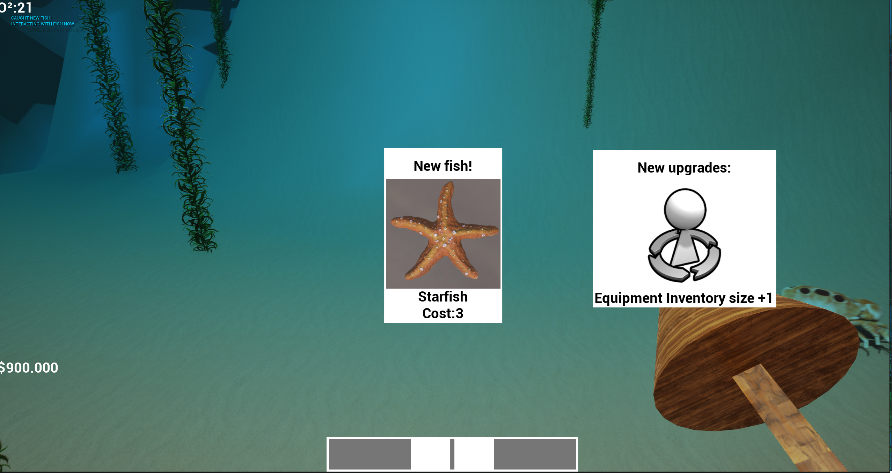
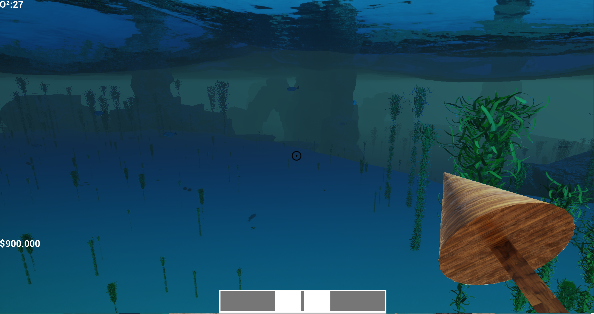
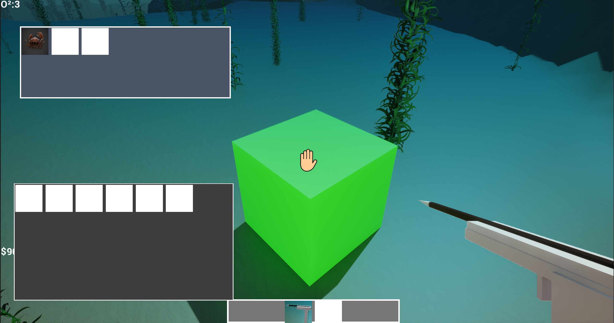
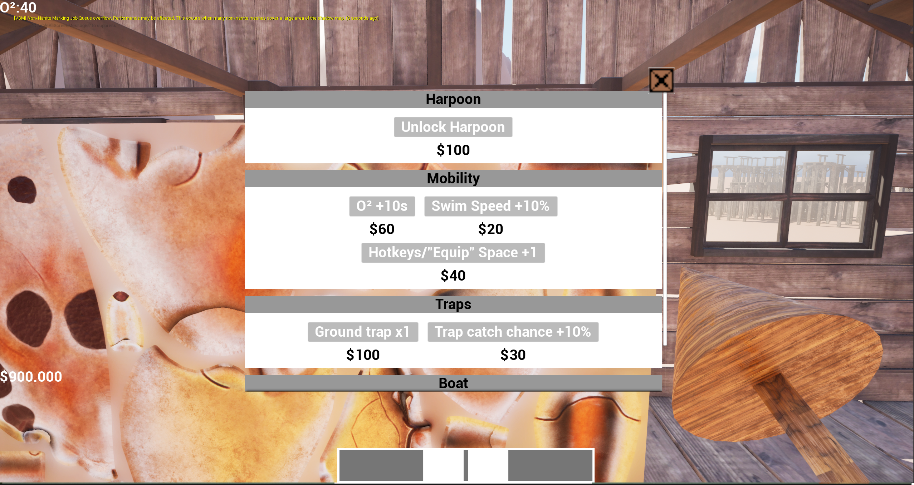

Kurzbeschreibung
In diesem Harpunier-Prototyp fängt der Spieler Fische, um diese zu verkaufen und bessere Upgrades zu erhalten. Fische die schwerer zu fangen sind, bringen beim Verkauf mehr Geld ein. Je mehr upgrades, desto weiter kann der Spieler aufs Meer hinaus schwimmen und exotischere Fische fangen. Mit Fisch-Fallen und (geplant) später Anglern oder Angeln können Fische passiv gefangen werden, während der Spieler aktiv Fische harpuniert.
Hintergrund
Die Idee dieses Projektes war es mich mit dem Wasser-/BuoyancySystem von Unreal Engine vertraut zu machen. Es ist schon lange ein Wunsch von mir ein Projekt im Meeres-Setting zu erstellen, dieser Prototyp war der erste Schritt in diese Richtung. Außerdem musste ich eine eigene AI-Bewegungs-Logik erstellen, da die Standard Unreal Engine-AI-Pfadfindungslogik nur funktioniert, wenn sich die AI am Boden befindet.
Spielablauf
- Der Spieler startet mit einem Speer und einem Ruder-Boot an einem Steg. Am Ende des Steges befinden sich Shops bei denen der Spieler neue Upgrades kaufen, und Fische verkaufen kann.
- Der Spieler springt ins Wasser und fängt seinen ersten Fisch. Jeder erste Fang einer Fischart erlaubt dem Spieler neue Upgrades zu kaufen (z.B.: Flunder gefangen: Ruder-Boot Speed-Upgrade Stufe 1 freigeschaltet)
- Hat der Spieler genug Geld angesammelt kann eine Harpune gekauft werden. Mit der Harpune lassen sich Fische fangen, die vorher entkommen sind, wenn der Spieler zu nah kam. Die Harpune kann durch den Fang neuer Fische viele Upgrades erhalten (Stärke, Schuss-Geschwindigkeit, Einhol-Geschwindigkeit, Nachlade-Geschwindigkeit, usw.).
- Mit genug Geld kann der Spieler ein neues Boot kaufen und neue Gebiete erkunden.


Features
Boote

Ruder-Boot
Standard-Boot des Spielers. Kann sich nur im Tutorial-Bereich fortbewegen (in anderen Bereichen werden Wellen zu stark für das Ruder-Boot).

Kleines Fischer Boot
Das erste "richtige" Boot des Spielers um den Tutorial-Bereich zu verlassen und neue Gebiete zu erkunden.
Fisch-Werkzeuge

Speer
Anfangs-/Standard-Fisch-Werkzeug des Spielers. Hat eine sehr kurze Reichweite, reicht nur um Flunder, Seeigel und Krabben zu fangen.
Harpune
Ermöglicht das Fangen von exotischeren Fischen.

Fisch-Falle
Eine Falle die passiv Fische fängt. Anfangs nur Krabben und Flunder, kann Upgrades erhalten um bessere Fische zu fangen.
Upgrade Shop

Shop
Hier kann der Spieler neue Upgrades kaufen und seine Fische verkaufen.
Technische Details
- Engine: Unreal Engine (Blueprints / Visual Scripting)
- Source Control: GitHub.
- Solo-Projekt
Herausforderung → Lösungsweg
- Herausforderung: Schiffe lagen nicht stabil auf dem Wasser.
- ->Lösung: Buoyancy-Settings überarbeitet. Eine vernünftige Verteilung von Buoyancy-Punkten und das Einstellen der wirkenden Kräfte ist essenziell, damit sich das Objekt wie gewünscht verhält
- Herausforderung: Nav-Mesh-Pfadfindung ist für eine Bewegung in alle Richtungen ohne Kontakt mit dem Nav-Mesh ungenügend.
- ->Lösung: Mein eigenes AI-Pfadfindungs-System erstellen. Jeder Fisch hat eine gewissen Bereich zugewiesen (z.B. Tutorial-Bereich unterteilt in: Tutorial-oben und Tutorial-unten). Zum Fortbewegen nimmt der Fisch einen zufälligen Punkt in diesem Bereich, feuert einen Line Trace in die Richtung des Punktes. Wenn der Line Trace etwas trifft bewegt sich der Fisch zum Treffpunkt des Line Traces. Wenn der Line Trace nichts trifft, bewegt sich der Fisch zum Ende des Line Traces. So konnte ich eine Bewegung der Fische in alle Richtungen gleichzeitig erzeugen, und gleichzeitig erzwingen dass die Fische in ihrem zugewiesenen Bereich bleiben.
Learnings
- Masken erlauben mir das Wasser innerhalb gewisser Kollision-Zonen auszublenden. Dies erlaubte mir das Wasser aus den Schiffen zu entfernen und die Schiffe somit optisch realistischer zu gestalten.
- Wasser-Plugin Basics verstanden.
- Eigenes leicht erweiterbares AI-Pfadfindungs-System erstellt.
Downloads / Links / Screenshots
Nicht vorhanden. Steht aktuell nicht in der Planung fortgeführt zu werden. Ich werde das hier gelernte Wissen für ein neues, Meer/Boot bezogenes Projekt nutzen.
← Zurück zum Portfolio